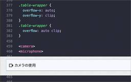

コリス
https://coliss.com
Web制作に関する最新の情報をご紹介
フィード

クリスタの最新機能もこれでよく分かる！ プロ絵師たちが使用するイラスト制作のテクニックを徹底的に解説 -クリスタ操作術 決定版 改訂2版
コリス
※本ページは、アフィリエイト広告を利用しています。 2026年3月にアップデートされたClip Studio Paint ver.5対応の解説書は、初じゃないでしょうか。 プロのイラストレーター、絵師さんたちが使用するク […]
2日前

浮世絵にインスパイアされたUIコンポーネント、和紙・墨・朱の和のカラースキームが癒やされる -Hinomaru Ink UI Kit 23
23
コリス
日本の浮世絵にインスパイアされ、日の丸のポスターのように描かれた再利用可能なUI要素・UIコンポーネントのキットを紹介します。 テキストや罫線には墨色、背景色にはくすんだ和紙のような色、アクセントカラーには日の丸の紅色を […]
3日前
これはUIデザイナーの手間が増えそう！ iPhone DuoでWebページがどのように表示されるかを確認できるシミュレータ -iPhone Duo Simulator 24
コリス
Appleから折りたためるスマホ「iPhone Duo」がついに発表されました。364,800円からというお値段も驚きですが、UIデザイナーはその多彩なビューポートに面倒だなと思った人もいると思います。 WebページやW […]
4日前

HTMLのcamera要素、CSSで最上行と最上列を固定表示した表を実装できるなど、Chrome 153で追加された新機能 2
コリス
先週アップデートされたChrome 153に追加された、CSSとUIに関する新しい機能を紹介します。 今回のアップデートで注目すべきは、最上行と最上列を固定表示した表をCSSで実装できる「単一軸のスクロールコンテナ」、ユ […]
5日前

こういうデザイン書が欲しかった！ 不易流行、日本の伝統デザインについて深くふかく学べるデザイン書 -伝統デザインのはなし
コリス
※本ページは、アフィリエイト広告を利用しています。 不易流行とは松尾芭蕉による哲学、変わらない本質的な価値（不易）を大切にしながら、時代に応じて変化するもの（流行）を取り入れるという、相反する2つが備わることで新しい価値 […]
9日前
Webページをスキャンして、古いCSSに置き換わるモダンCSSを提案してくれる無料ツール -Modern CSS Radar
コリス
Webページに使用されているHTMLとCSSをスキャンして、古いHTMLとCSSが使用されている箇所を指摘し、それに置き換わるモダンHTMLとCSSを提案してくれるオンラインツールを紹介します。 現在では必要のないプレフ […]
10日前
CSS Gridで実装、弁当グリッドのレイアウトを確認しながらCSSを生成できる無料ツール -Bento Grid Builder
コリス
弁当グリッドは見栄えがいいレイアウトですが、HTMLとCSSで実装するとすこし難しいかもしれません。完成レイアウトを調整しながら、HTMLとCSSのコード（Tailwind CSS用も）を生成してくれる無料ツールを紹介し […]
11日前
面倒なCSSアニメーションもこれで簡単に実装できる！ 繊細な動きを最優先にしたフレームワーク -EaseMotion CSS
コリス
WebサイトやスマホアプリのUI要素やコンポーネント、レイアウトに繊細なアニメーションによる動きを加えるCSSフレームワークを紹介します。 依存関係はゼロ、非常に軽量で、初心者でも扱いやすいCSSに設計されています。cl […]
12日前
Kindle本 高価格帯タイトルセールが開催！ 人気のデザイン書やUIデザイン、絵師さん向けのイラスト書がかなりお買い得です
コリス
※本ページは、アフィリエイト広告を利用しています。 Kindle本 高価格帯タイトルセールが開催しています！ 高価格帯と聞くと身構えてしまうかもしれませんが、私の感覚だとすべて普通の価格帯だと思います。高価格帯というと5 […]
13日前
国産ノーコードツール「Studio」の進化がすごすぎる！ 実務レベルの制作まで詳しく解説された -Studio ノーコードの教科書
コリス
※本ページは、アフィリエイト広告を利用しています。 ノーコードでWebサイトを制作できるデザインツール「Studio」、ちょっと目を離すとサービス内容が強化されていたり、ツール自体が進化していたりします。 機能改善やアッ […]
16日前